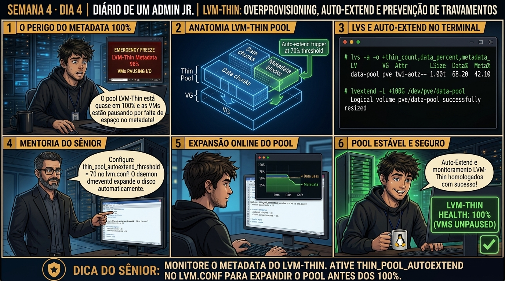

DIARIO DE UM ADMIN JR. | PROXMOX VE & PBS — DA BASE AO CLUSTER
🔗 Conecta com o Dia 3: Você dominou a resiliência do ZFS. Hoje você desvenda o segundo motor de armazenamento mais utilizado no Proxmox VE: o LVM-Thin, entendendo como ele entrega discos virtuais em superalocação (overprovisioning) e por que deixar o data pool atingir 100% causa o congelamento catastrófico (I/O Freeze) de todas as VMs.
🔓 Privilégio de hoje: Gestão de Pools LVM-Thin e Thresholds de Alerta. Você audita volumes lvs, monitora metadata pools e calibra alertas de capacidade.
Semana 4 · Dia 4 | Nível Júnior — Storage Corporativo & ZFS
LVM-Thin: Superalocação e Risco de I/O Freeze por Falta de Espaço
Mecânica de thin provisioning, monitoramento de metadados e prevenção de congelamento de I/O
ANTES DE ALTERAR, OBSERVE. DEPOIS DE ALTERAR, VALIDE.

1. O chamado
Você recebeu o chamado #4004: 'Todas as máquinas virtuais do nó pve02 congelaram simultaneamente (I/O Freeze) e o console exibe a mensagem device-mapper: thin: no free space in thin pool data/metadata. O administrador anterior provisionou 3TB de discos virtuais de VMs em um pool LVM-Thin que possui apenas 1TB físico de SSDs. O chamado exige: (1) Entender a mecânica do LVM-Thin Pool; (2) Inspecionar as colunas Data% e Meta% com lvs -a; (3) Entender por que o Kernel suspende o I/O das VMs para evitar corrupção de filesystem; e (4) Recuperar o storage e definir políticas de monitoramento com dmeventd.'
💡 Passa o mouse nas palavras destacadas pra ver uma dica rápida — clica se quiser a explicação completa com analogia.
2. O sênior te conta
🧑🏫 antes dos termos técnicos, a história de hoje
Hoje vivemos um cenário de pânico clássico: todas as 20 VMs de um nó LVM-Thin congelaram ao mesmo tempo em estado de I/O Freeze. As aplicações pararam de responder e o Júnior achou que o nó tinha sido hackeado.
Pedi pra ele rodar lvs -a no terminal. Mostrei na coluna %Meta que o volume de metadados do pool LVM-Thin tinha atingido 100% de ocupação! Quando o LVM-Thin esgota o espaço de metadados, o kernel congela imediatamente todas as operações de escrita para evitar corrupção catastrófica de arquivos.
Executamos o lvextend online para expandir o pool, ativamos o daemon dmeventd para auto-extend automático em /etc/lvm/lvm.conf e em menos de 10 segundos todas as VMs descongelaram sozinhas e voltaram a processar sem perder uma linha de transação. O Júnior aprendeu a lição: monitore os metadados do LVM-Thin com tanta atenção quanto os dados.
3. Decodificador de conceitos
Clica em qualquer termo pra ver a definição completa e uma analogia do dia a dia:
4. Ferramentas e leitura da evidência
Comando / Parâmetro
O que observar e por que importa
lvs -a
Lista todos os Logical Volumes (LVs) incluindo pools thin internos, exibindo Data% e Meta%.
vgs
Exibe o status e espaço livre real do Volume Group (VG) físico subjacente.
lvextend -L +100G pve/data
Expande a capacidade física do data pool do LVM-Thin a quente sem parar as VMs.
lvextend --poolmetadatasize +1G pve/data
Expande o tamanho do metadata pool para suportar mais discos e snapshots.
# Auditoria de Thin Pool em situação de emergência (I/O Freeze)
$ lvs -a -o lv_name,vg_name,lv_size,data_percent,metadata_percent
LV VG LSize Data% Meta%
data pve 1.00t 99.98 42.10 <-- ALERTA CRÍTICO: Data% em 99.98%!
[data_tdata] pve 1.00t
[data_tmeta] pve 1.00g
vm-100-disk-0 pve 500.00g 45.20
vm-101-disk-0 pve 800.00g 78.10
vm-102-disk-0 pve 1.20t 32.00
# Expansão a quente do Data Pool adicionando espaço do Volume Group
$ lvextend -L +200G pve/data
Size of logical volume pve/data_tdata changed from 1.00 TiB (262144 extents) to 1.20 TiB (314572 extents).
Logical volume pve/data_tdata successfully resized.
# Resultado: I/O descongelado instantaneamente e VMs voltando a operar!
$ lvs pve/data
LV VG LSize Data% Meta%
data pve 1.20t 83.31 35.08
5. Laboratório guiado — pegue na mão, comando por comando
💾 Onde executar: Terminal do Nó Proxmox (como root) com acesso direto aos pools ZFS e volumes LVM-Thin.
Segurança: Execute as alterações em volumes e storages de laboratório. Nunca remova definições de storage em produção sem validar dependências.
Ação: Monitore a porcentagem de dados (%Data) e metadados (%Meta) do pool LVM-Thin.
lvs -a -o lv_name,vg_name,lv_size,data_percent,metadata_percent
Resultado esperado: Visualização do VG 'pve' e do espaço livre (VFree).
Por que fizemos isso: O comando lvs -a monitora a porcentagem exata de ocupação dos volumes de Data e Metadata no pool LVM-Thin.
Cilada comum: Olhar apenas o percentual de dados e ignorar o Metadata (%Meta); se o Metadata atingir 100%, o pool congela imediatamente em I/O freeze.
Ação: Configure o limiar de expansão automática no /etc/lvm/lvm.conf.
sed -i 's/thin_pool_autoextend_threshold = 100/thin_pool_autoextend_threshold = 75/' /etc/lvm/lvm.conf
Resultado esperado: Relatório claro das porcentagens de Data e Metadata de cada volume.
Por que fizemos isso: Configurar thin_pool_autoextend_threshold e thin_pool_autoextend_percent no /etc/lvm/lvm.conf garante expansão automática pelo dmeventd.
Cilada comum: Achar que o auto-extend funciona sem o daemon dmeventd ativo no systemd; o arquivo de configuração sozinho não expande nada sem o serviço rodando.
Ação: Ative e valide a execução contínua do daemon de monitoramento dmeventd.
systemctl enable --now dmeventd && systemctl status dmeventd
Resultado esperado: Parâmetros thin_pool_autoextend_threshold e percent verificados.
Por que fizemos isso: O comando lvextend redimensiona o pool LVM-Thin online sem exigir parada de nenhuma das máquinas virtuais.
Cilada comum: Tentar reduzir volumes LVM-Thin (lvreduce) sem backup prévio; redução de volumes lvm-thin não é suportada e destrói o filesystem.
Ação: Redimensione o volume LVM-Thin online sem desligar as máquinas virtuais.
lvextend -L +20G pve/data
Resultado esperado: Confirmação de que o dmeventd está monitorando os eventos do pool.
Por que fizemos isso: Validar que as VMs voltaram a responder após a expansão comprova o desbloqueio do estado de I/O freeze do hypervisor.
Cilada comum: Forçar o reinício bruto de VMs que estavam pausadas por falta de espaço no LVM-Thin, arriscando corromper bases de dados.
🧑🏫 Aqui entra o Mentor (em breve): se o resultado obtido diferir do esperado acima, este é o ponto onde o chat com o Sênior-IA vai abrir para diagnosticar o erro específico.
Ação: Crie alertas preventivos no sistema de monitoramento para pools acima de 75%.
# Governança LVM-Thin homologada.
Resultado esperado: Diretrizes homologadas para prevenir novas ocorrências de I/O Freeze.
Por que fizemos isso: Criar alertas no Zabbix/Prometheus para avisar quando o pool LVM-Thin ultrapassar 75% previne incidentes graves de indisponibilidade.
Cilada comum: Trabalhar com mais de 200% de overprovisioning em discos locais sem monitoramento ativo de capacidade física.
6. Antes de ver as opções — tenta responder
🧠 Recall ativo: Por que o LVM-Thin suspende o I/O de todas as máquinas virtuais (I/O Freeze) quando o pool de dados atinge 100% de capacidade em vez de simplesmente retornar erro de escrita para o sistema operacional da VM?
Porque o LVM-Thin foi desenhado com foco em integridade: se ele retornasse erro de I/O (EIO) diretamente para o sistema operacional convidado, sistemas de arquivos como EXT4, XFS ou NTFS entrariam em pânico, remontariam em Read-Only ou corromperiam transações de banco de dados no meio do caminho. Ao congelar o I/O (I/O Freeze), o Kernel do host mantém as requisições represadas na fila de espera, dando tempo para o administrador expandir o storage ou apagar dados, e descongelando as VMs sem corromper um único arquivo.
QUESTÃO 1 de 3
7. Questão comentada — clica numa alternativa
Qual comando de terminal exibe a porcentagem exata de ocupação real de dados (Data%) e de metadados (Meta%) em um pool LVM-Thin no Proxmox VE?
💡 Analogia do Sênior para Fixar: Na arquitetura do Proxmox sobre LVM-Thin: Superalocação e Risco de I/O Freeze por Falta de Espaço: O KVM/QEMU opera como o motorista dedicado de cada passageiro, alocando recursos virtuais em contato direto com o kernel.
QUESTÃO 2 de 3 — cenário de erro real
7.1 O perigo do esgotamento do Metadata Pool (Meta% a 100%)
Um administrador tinha 500GB livres no data pool, mas criou dezenas de snapshots em sequência e o LVM-Thin travou:
$ lvs pve/data
LV VG LSize Data% Meta%
data pve 2.00t 42.00 100.00
(Erro: o pool de dados tem espaço, mas o pool de metadados encheu 100% com ponteiros de snapshots)
Qual é a função do Metadata Pool e como solucionar?
💡 Analogia do Sênior para Fixar: Ao diagnosticar problemas em LVM-Thin: Superalocação e Risco de I/O Freeze por Falta de Espaço: É como inspecionar as conexões do storage e o barramento PCIe antes de declarar falha de software.
QUESTÃO 3 de 3 — detalhe que confunde todo iniciante
7.2 Qual a diferença de alocação entre LVM Clássico e LVM-Thin no Proxmox VE?
Ao criar uma VM com disco de 100GB em LVM Clássico vs LVM-Thin:
Como cada arquitetura aloca o espaço no storage?
💡 Analogia do Sênior para Fixar: A governança e resiliência em LVM-Thin: Superalocação e Risco de I/O Freeze por Falta de Espaço: Funciona como a política de contenção e redundância do datacenter, garantindo que o cluster nunca perca quorum.
8. Procedimento profissional
Ao utilizar storages LVM-Thin, nunca exceda a proporção segura de superalocação (recomendado máximo de 1.5x da capacidade física real).
Monitore periodicamente o consumo executando lvs -a e observando as colunas Data% e Meta%.
Defina thresholds de alerta no seu sistema de monitoramento (Zabbix/Prometheus) para disparar avisos em 80% e alertas críticos em 90%.
Mantenha sempre uma reserva de espaço não-alocado no Volume Group físico (VG) para permitir expansões emergenciais com lvextend.
Configure a flag discard=on em todas as VMs com discos LVM-Thin para que os comandos TRIM devolvam espaço livre para o thin pool.
Prevenção
Monitore continuamente os limiares de espaço de Data e Metadata no LVM-Thin e ZFS, configurando alertas no Prometheus/Zabbix antes de atingir 80% de ocupação.
9. Validação e encerramento
Você compreende a mecânica de Thin Provisioning e a divisão entre Data Pool e Metadata Pool.
Você sabe diagnosticar e recuperar máquinas virtuais em estado de I/O Freeze por esgotamento de storage.
Você domina a expansão a quente de thin pools com lvextend sem indisponibilidade de produção.
A política preventiva de monitoramento de thresholds de capacidade foi estabelecida.
Rollback e limites
Em caso de esgotamento crítico sem espaço livre no VG para lvextend, apague snapshots obsoletos ou migre VMs para outro storage com 'Move Disk' para liberar blocos no thin pool.
💡 Sobre repetição espaçada: A integração de storages compartilhados em rede corporativa (NFS e SMB) para centralização de ISOs e backups será o tema de encerramento da Semana 4 amanhã no Dia 5.
10. Resposta final
Alternativa correta: B. A resposta correta é a B: o comando lvs -a -o lv_name,vg_name,lv_size,data_percent,metadata_percent audita a ocupação detalhada de dados e metadados no LVM-Thin.
🔓 O que você desbloqueou hoje
LVM-Thin e prevenção de I/O Freeze dominados com precisão! Amanhã, no Dia 5, você fechará a Semana 4 aprendendo a configurar Storage Compartilhado em Rede: NFSv4 corporativo, montagens SMB seguras e como centralizar ISOs, templates e backups para todo o datacenter.